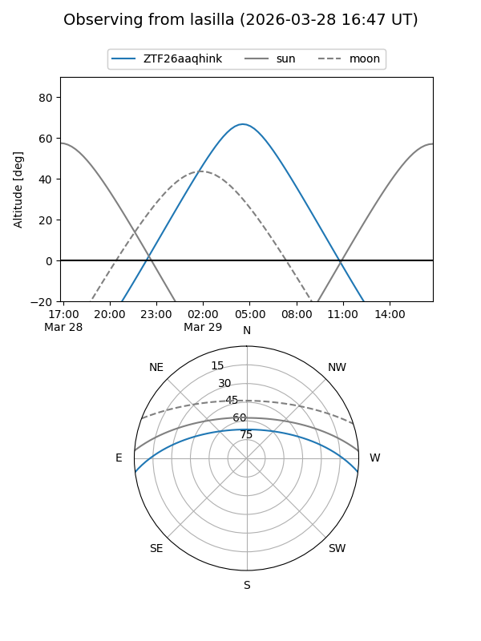
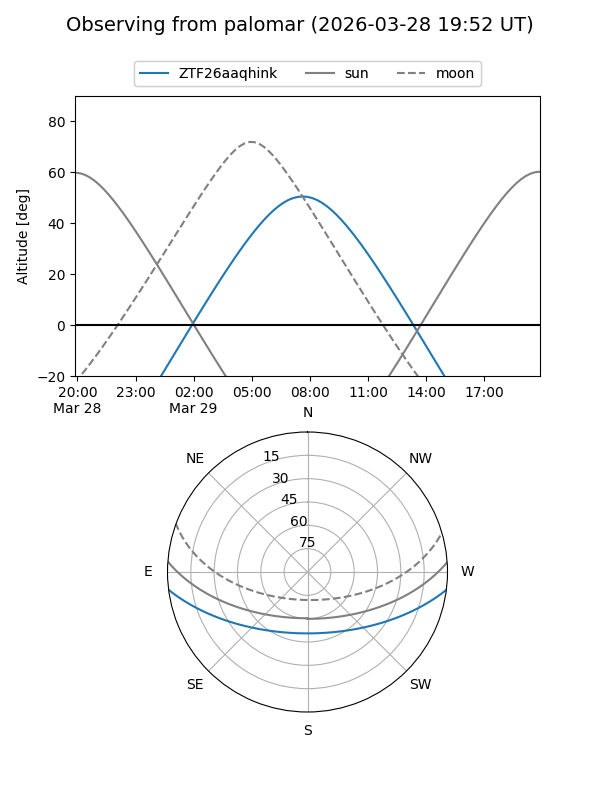
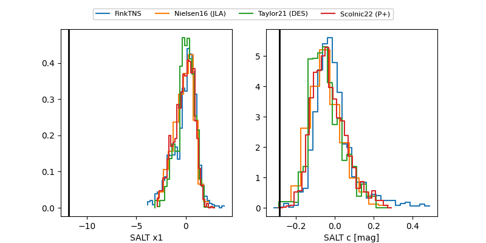

ZTF26aaqhink
Target ZTF26aaqhink at 2026-03-29 09:46
Aliases and brokers:
FINK: link
Lasair: link
ALeRCE: link
alt names
ZTF26aaqhink (ztf,fink_ztf)
Coordinates:
equatorial (ra, dec) = 183.9274,-5.96712
equatorial (HMS+DMS) = 12:15:42.58,-05:58:01.64
galactic (l, b) = (286.9881,+55.79469)
Flags:
Photometry:
last ztfg=13.82
1 ztfg detections
Lightcurve
Visibility


Additional plots
